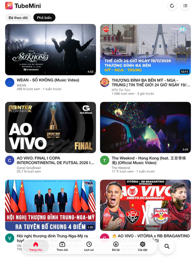

TubeMini — xem YouTube trên iPad và iPhone iOS 5 – 8, giao diện kiểu iOS 26 như app YouTube mới. Cần địa chỉ máy chủ: đăng ký qua bot Telegram @tube_mini_bot, xem tubemini.github.io.
Tính năng
- Tìm video và kênh, video liên quan, bình luận
- Chia sẻ như app YouTube: chép link youtu.be (có "Bắt đầu tại"), gửi qua Tin nhắn, Mail; chia sẻ kênh, playlist (nhấn giữ một video trong danh sách cũng được)
- Bấm link YouTube trong Safari, GramMini, Tin nhắn, Mail… là mở thẳng trong TubeMini: video (cả Shorts, live, youtu.be), kênh, playlist, tìm kiếm. Tắt được trong Cài đặt → Link YouTube
- Phát 360p / 720p / 1080p, xem tiếp từ chỗ cũ; chạm đúp tua, chụm để lấp đầy, vuốt chỉnh độ sáng / âm lượng
- Thu nhỏ trình phát để lướt tìm video khác
- Hình nổi (gói riêng TubeMini - Hình nổi, iOS 6 – 8): video nổi trên màn hình chính và app khác; chạm khung để mở lại app, chạm hai lần để đổi cỡ
- Theo dõi kênh, lịch sử, trang kênh
- Chỉ nghe (phát khi khoá màn hình), tải về để xem offline
- Cài đặt → Mạng: DNS mã hoá, vượt chặn nhà mạng (Mức 1 / Mức 2), proxy SOCKS5 hoặc Shadowsocks (dán link ss://, cả SS 2022 của 3X-UI)
- TLS mới: app tự mã hoá kết nối (TLS 1.3, chứng chỉ gốc Mozilla) thay cho TLS cũ của iOS, để vẫn vào được YouTube và máy chủ về sau
- Giao diện sáng / tối, thẻ video lớn hoặc danh sách; tự cập nhật trong app
Sau khi cài
 Nhắn bot Telegram @tube_mini_bot, bấm Đăng ký để nhận địa chỉ máy chủ (quét mã QR bằng điện thoại; có GramMini trên máy thì chạm vào thẻ bot trong Cài đặt của TubeMini). Rồi mở TubeMini → Cài đặt → Máy chủ → gõ địa chỉ bot gửi (không cần
Nhắn bot Telegram @tube_mini_bot, bấm Đăng ký để nhận địa chỉ máy chủ (quét mã QR bằng điện thoại; có GramMini trên máy thì chạm vào thẻ bot trong Cài đặt của TubeMini). Rồi mở TubeMini → Cài đặt → Máy chủ → gõ địa chỉ bot gửi (không cần https://) → Kiểm tra kết nối. Bot gửi tới GramMini trên chính máy đó thì bấm nút 📲 Mở trong TubeMini: app tự điền địa chỉ.
Hỏi đáp, báo lỗi
Nhóm Telegram @tivikit (t.me/tivikit). App Telegram chính thức không chạy trên iOS 5 / 6: quét mã QR bằng điện thoại, tìm @tivikit trong Telegram, hoặc dùng GramMini.


Mã nguồn mở GPL-3.0 · github.com/TubeMini/TubeMini · Không liên quan tới YouTube hay Google.